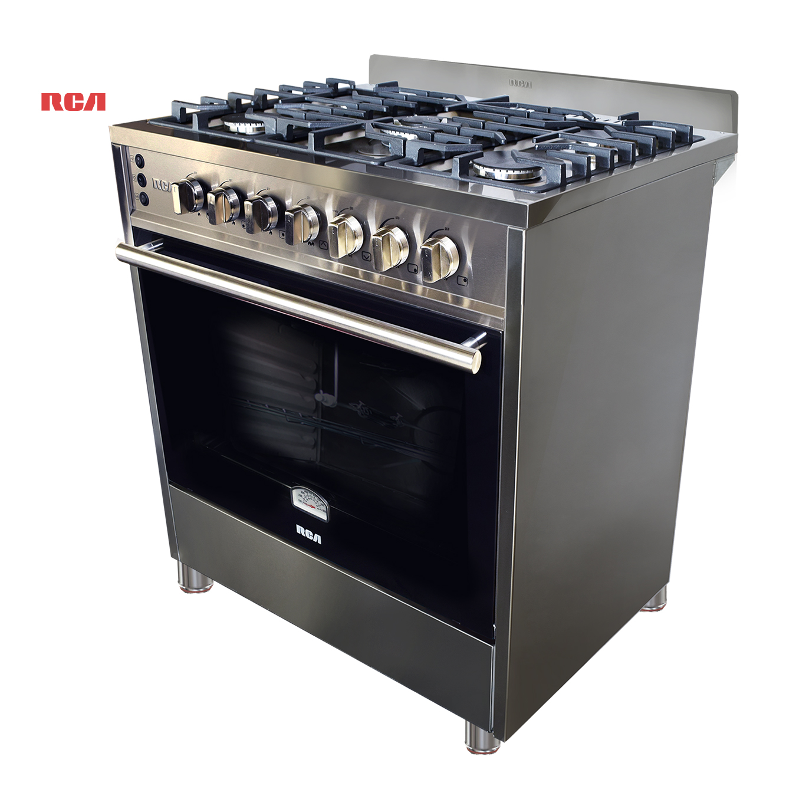

Hornos
Por supuesto, los hornos son uno de los electrodomésticos más importantes en la cocina, utilizados para cocinar una amplia variedad de alimentos mediante calor seco.
Los hornos vienen en una variedad de tamaños, desde modelos compactos para espacios pequeños hasta hornos de tamaño estándar para cocinas grandes. Es importante considerar la capacidad del horno para asegurarse de que pueda acomodar los platos y bandejas que deseas cocinar.
Permite ajustar la temperatura del horno según las necesidades de cocción.
Ofrecen configuraciones preestablecidas para diferentes tipos de alimentos y métodos de cocción.
Permite establecer el tiempo de cocción y recibir una alerta cuando los alimentos estén listos.
